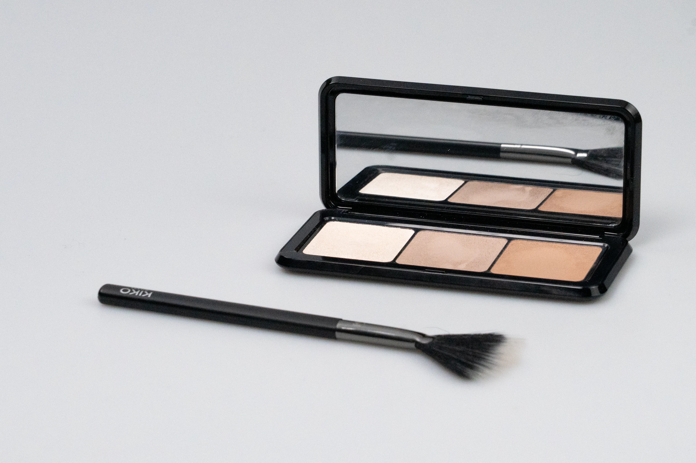
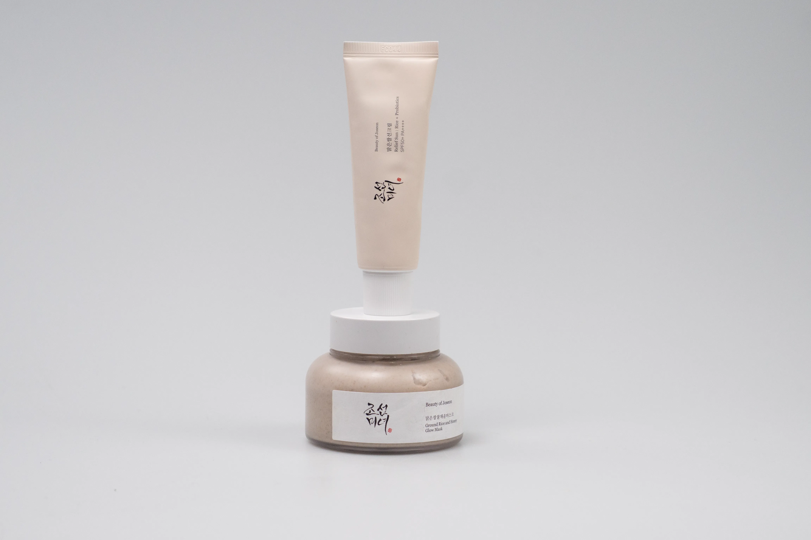
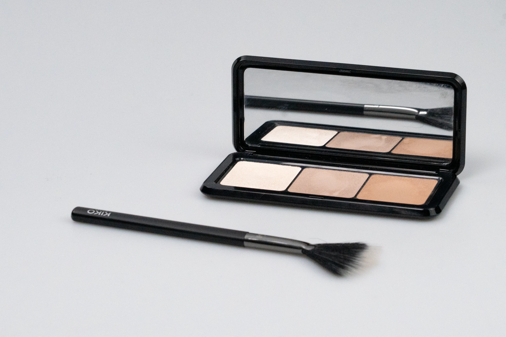
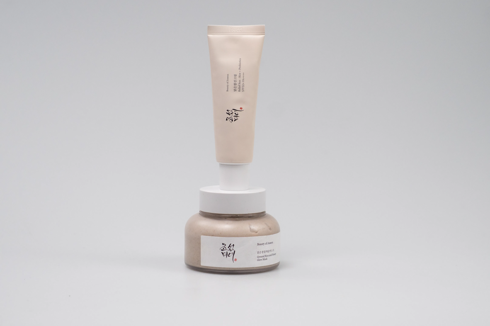
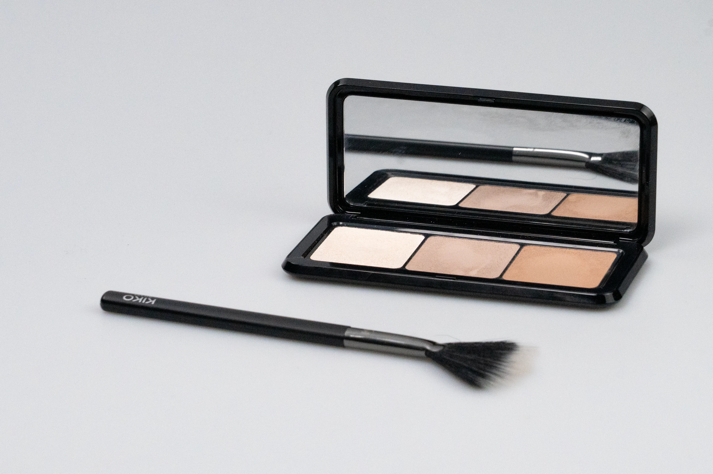
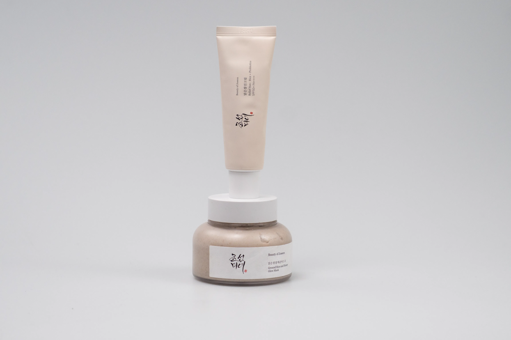

Produkt fotografering
Mit lille projekt her undersøger, hvordan man bedst fremhæver de perfekte vinkler af beauty produkter.
Læs mere om det nedenfor.
 





Mit lille projekt her undersøger, hvordan man bedst fremhæver de perfekte vinkler af beauty produkter.
Læs mere om det nedenfor.


Gennem Instagram har jeg lavet en lille GRWM video, som unge piger og kvinder elsker at se og hente inspiration fra på sociale medier.
App-idé med fokus på at skabe en æstetisk og brugervenlig app til alle beauty interesserede.
Klik her
En reklameplakat lavet i Adobe Indesign, hvor jeg har forkuseret på layout, fonts og farvevalg. Produktbilledet er mit eget foto, som jeg har taget og redigeret i Adobe Lightroom Classic. Her fremhæver jeg nuancerne og giver billedet et mere æstetisk og rent look. Jeg valgte dette produkt, da den bordeauxrøde farve står i smuk kontrast til baggrunden - Den perfekte efterårsstemning!

Et lille protrætbillede projekt, hvor jeg har arbejdet med en mørk baggrund og noget blødt hvidt lys, for at skabe et enkelt, rent og elegant look. Kontrasten mellem lyset og baggrunden fremhæver ansigtstræk, samtidig med valget af tøjfarve som skiller sig ud af den sorte baggrund. Målet med projektet var at skabe protrætter, der føles varme og professionelle.

Et Instagram opslag, hvor jeg har arbejdet med Tone of Voice (ToV) - Her forkuserer jeg på kommunikationen mellem brandet og målgruppen.
Klik her